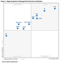
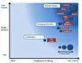

Leading the way with Managed Print Services
Gartner, IDC, Forrester and Quocirca recently issued industry analysis and reports that place Xerox in the top tier of Managed Print Services (MPS) vendors worldwide. Learn why we're proud of our MPS recognition.
- 
Gartner Magic Quadrant for Managed Print Services, Worldwide
Xerox is proud to be positioned as a leader in the Gartner Magic Quadrant for Managed Print Services, Worldwide. 1
Magic Quadrant for Managed Print Services, Worldwide View the Xerox MPS Newsletter featuring Gartner ›
-
 IDC MarketScape: Worldwide Managed Print and Document Services Vendor Assessment
IDC MarketScape: Worldwide Managed Print and Document Services Vendor AssessmentXerox is proud to be positioned as a leader in the IDC MarketScape: Worldwide Managed Print and Document Services Vendor Assessment.
- 
Industry reports managed print services
Xerox positioned as the leader in the Quocirca Managed Print Services Landscape.
Read the Quocirca "Managed Print Services Landscape, 2014" Summary Report (PDF, 1.26 MB)
-
Managed Print Services
The Forrester Wave™: Managed Print Services, Q2 2012. Xerox is proud to be positioned as a leader in "The Forrester Wave™: Managed Print Services." 2
1 This graphic was published by Gartner, Inc. as part of a larger research document and should be evaluated in the context of the entire document. The Gartner document is available upon request from Xerox.
Gartner does not endorse any vendor, product or service depicted in our research publications, and does not advise technology users to select only those vendors with the highest ratings. Gartner research publications consist of the opinions of Gartner's research organisation and should not be construed as statements of fact. Gartner disclaims all warranties, expressed or implied, with respect to this research, including any warranties of merchantability or fitness for a particular purpose.
2 The Forrester Wave™ is copyrighted by Forrester Research, Inc. Forrester and Forrester Wave™ are trademarks of Forrester Research, Inc. The Forrester Wave™ is a graphical representation of Forrester's call on a market and is plotted using a detailed spreadsheet with exposed scores, weightings, and comments. Forrester does not endorse any vendor, product, or service depicted in the Forrester Wave™ . Information is based on best available resources. Opinions reflect judgment at the time and are subject to change.